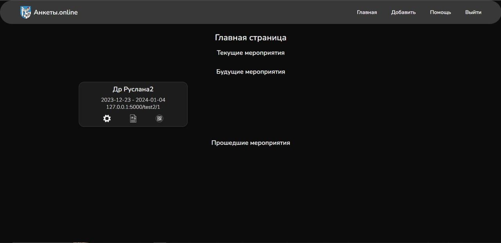
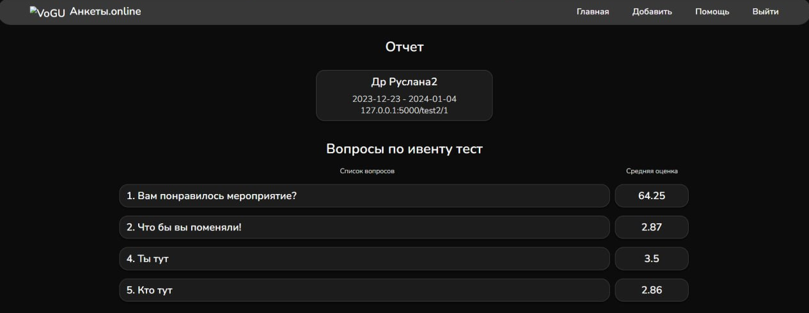

Меню
Главнаявернёт вас на главную страницу.
Добавитьне предназначена для пользователя(при нажатии система попросит авторизоваться).
Помощьоткрывает текущую страницу, где можно ознакомиться со справочной информацией.
Войтине предназначена для пользователя(при нажатии система попросит авторизоваться).
Главная страница

На главной странице можно увидеть все мероприятия(текущие, будущие и прошедшие). У каждого мероприятия указаны даты преведения и ссылка на анкету.
При нажатии на
При нажатии на можно будет увидеть QR-код мероприятия.
Прохождение анкеты
В анкете укзаны вопросы, которые позволят узнать мнение мероприятии.Ответом на вопрос будет одно число от 1 до 5.
При ответах
1и
2появиться поле для письменного ответа, в котором пользователь может более точно описать свой ответ на вопрос.
Отчёт
В отчёте по мероприятию можно увидеть список вопросов, которые были в анкете, а также среднуюю оценку по каждому вопросу.